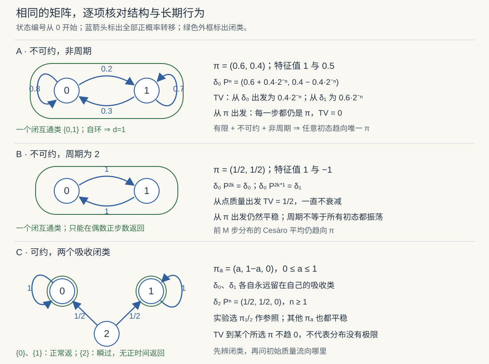

本页目录
随机过程 II · Markov 链（一）：转移与状态分类
Markov 链是"只看现在、不问过去"的随机演化——这个看似粗暴的假设换来了完整的矩阵化理论：演化 = 矩阵幂。本页管"怎么转移、状态什么性格"，下一页管"转移到最后去哪"。高等代数的矩阵工具在此整装上岗。
学习层：平稳不等于混合，谱也不会替你补结构条件
1. 先预测：三个性质到底各自保证什么？
实验固定三张小转移矩阵，先不显示矩阵幂、TV 距离、特征值和结果账本。请先回答：
- \(\pi P=\pi\) 是“平稳分布”的方程，还是已经证明了链不可约、非周期并且从任意初态收敛？
- 有限状态链不可约且非周期时，\(\mu_t=\mu_0P^t\) 是否从每个初始分布都趋向同一个唯一 \(\pi\)？
- 不可约的周期链是否可以有唯一平稳分布，却让 \(\operatorname{TV}(\mu_t,\pi)\) 永远不趋于 \(0\)？
- 可约链是否可能有多个闭类、多个平稳分布，因而让长期行为依赖初始状态？
揭示前不显示数值参数或图表；提交后再用同一个 \(P\) 同时核对结构、\(P^t\)、分布和谱。这样“定理条件”与“一条样本曲线”不会混成一句混合保证。
2. 静态后备：三个反例把边界钉住
JavaScript 失效时的静态读法：以下使用行随机矩阵，状态从 \(0\) 开始，\(\operatorname{TV}(\mu,\nu)=\frac12\sum_i|\mu_i-\nu_i|\)。
| 预设 | \(P\) | 结构证书 | 平稳与谱 | 从 \(\delta_0\) 读什么 |
|---|---|---|---|---|
| 不可约、非周期 | \(\begin{pmatrix}0.8&0.2\\0.3&0.7\end{pmatrix}\) | 一个互通类，\(d=1\) | \(\pi=(0.6,0.4)\)，\(\lambda=(1,0.5)\) | \(\delta_0P^t=(0.6+0.4\cdot0.5^t,\,0.4-0.4\cdot0.5^t)\)，故 \(\operatorname{TV}=0.4\cdot0.5^t\) |
| 不可约、周期 | \(\begin{pmatrix}0&1\\1&0\end{pmatrix}\) | 一个互通类，\(d=2\) | \(\pi=(0.5,0.5)\)，\(\lambda=(1,-1)\) | 分布在 \(\delta_0,\delta_1\) 间交替；TV 永远为 \(0.5\) |
| 可约、两吸收类 | \(\begin{pmatrix}1&0&0\\0&1&0\\0.5&0.5&0\end{pmatrix}\) | 闭类 \(\{0\},\{1\}\)；全链不可约性失败 | \(\pi_a=(a,1-a,0)\)，\(\lambda=(1,1,0)\) | \(\delta_0,\delta_1\) 各自永远吸收；\(\delta_2P=(0.5,0.5,0)\) |
第一行给出一个精确的谱对账：非平凡特征值的模为 \(0.5\)，而从 \(\delta_0\) 出发的 TV 恰为 \(0.4\cdot|0.5|^t\)。第二行的 \(-1\) 不衰减，所以“有平稳分布”不推出点态分布收敛。第三行甚至没有唯一的全局平稳分布；\(P^t\) 仍然可以精确算出，但它不能凭空制造不可约性。
3. 账本的四层读法
对任意行分布 \(\mu_0\)，实验逐项列出
谱栏报告 \(P\) 的特征值和非平凡谱模 \(\rho_\star=\max_{j\ge2}|\lambda_j|\)，并把 \(\rho_\star^t\) 与当前 TV 放在一起。对第一张二维模型，二者给出精确等式；一般链中谱信息需要结合可逆性、范数和初始分布等假设，不能把一个 \(\rho_\star^t\) 数字自动宣称为所有 TV 的等号。平稳残差接近零只说明所选 \(\pi\) 解了平稳方程；不可约、非周期和可约证书仍要另行报告。
4. 定理边界与迁移
- 有限 + 不可约给唯一平稳分布；再加非周期才得到从任意初态到 \(\pi\) 的分布收敛。周期链的 Cesàro 平均可以收敛，但逐步分布可能振荡。
- 可约时应先拆互通类和闭类。平稳分布可以有多个，瞬态类的质量会流向闭类；“看起来收敛”的一条初始轨迹不是唯一性证书。
- 对无限状态空间，常返/正常返、平稳分布存在性和混合还要另加条件；本实验的有限矩阵不替代那些定理。
- \(\pi P=\pi\) 是不变性方程，不是“链已经跑了很久”的经验拟合；\(P^t\) 的每一行和为 \(1\) 也不等于每一行都趋向同一个 \(\pi\)。
1. Markov 性与转移矩阵
定义（Markov 性） 离散时间、可数状态的过程 \(\{X_n\}\) 满足
——给定现在，未来与过去条件独立（"无记忆"不是没有历史，而是历史的全部影响已浓缩在当前状态里——状态设计得够丰富，任何过程都能 Markov 化，这是建模的自由度所在）。本页限时齐链（\(p_{ij}\) 不随 \(n\) 变）。
转移矩阵 \(P = [p_{ij}]\)：行随机（每行非负、行和为 1）。链的全部动力学 = 初始分布 \(\pi^{(0)}\)（行向量）+ \(P\)。
三个标准例子：天气链（晴/雨两状态 \(2\times2\)）；随机游走（整数格点 \(\pm 1\)，概率 \(p/q\)）；赌徒破产链（随机游走 + 吸收壁 \(0\) 与 \(N\)）。
2. n 步转移：Chapman–Kolmogorov

定理（C–K 方程） \(n\) 步转移概率 \(p_{ij}^{(n)} = P(X_{m+n} = j \mid X_m = i)\) 满足
（证明一行：对中间时刻的状态 \(k\) 用全概率公式 + Markov 性。）演化 = 矩阵幂——分布的传播是 \(\pi^{(n)} = \pi^{(0)} P^n\)。计算 \(P^n\) 的正规武器正是高代 V 的对角化：\(P = Q\Lambda Q^{-1} \Rightarrow P^n = Q\Lambda^n Q^{-1}\)，特征值的幂决定一切长期行为（\(|\lambda| < 1\) 的成分衰减、\(\lambda = 1\) 的成分存活——下一页平稳分布的伏笔）。
3. 状态分类：链的解剖学
可达与互通：\(i \to j\)（某 \(n\) 使 \(p_{ij}^{(n)} > 0\)）；互通 \(i \leftrightarrow j\) 是等价关系 ⇒ 状态空间分解为若干互通类。不可约链：全空间一个类（哪都去得了）。
常返与瞬过：从 \(i\) 出发必定（概率 1）返回 \(i\) 则称常返，否则瞬过（有正概率一去不返）。判据：\(i\) 常返 \(\iff \sum_n p_{ii}^{(n)} = \infty\)（期望返回次数无穷）。常返再分：正常返（平均返回时间 \(\mu_i < \infty\)）与零常返（回得来但平均要等无穷久——无限状态空间才会出现）。
周期：\(d(i) = \gcd\{n: p_{ii}^{(n)} > 0\}\)；\(d = 1\) 称非周期。（棋盘式来回跳的链 \(d = 2\)——分布永远震荡不收敛，这是下一页收敛定理要排除周期的原因。）
类性质：互通的状态同常返/瞬过、同周期——"性格是整个互通类的"，验一个代表即可。
名例（一维随机游走的相变）：对称（\(p = \frac12\)）时常返（回得了家），不对称时瞬过（漂走）。（Pólya 定理进阶版：简单随机游走在 \(\mathbb{Z}^1, \mathbb{Z}^2\) 常返、\(\mathbb{Z}^3\) 起瞬过——"喝醉的人总能回家，喝醉的鸟可能回不了巢"。）
4. 首达概率与吸收问题
首达概率 \(f_{ij}\) = 从 \(i\) 出发迟早到达 \(j\) 的概率。求法（一步分析法，本页的万能钥匙）：对第一步的去向做全概率分解，得线性方程组。
赌徒破产问题（必会全解） 本金 \(i\)，每局 \(\pm 1\)（概率 \(p/q\)），到 \(N\) 收手、到 \(0\) 破产。记 \(h_i\) = 从 \(i\) 出发最终到 \(N\) 的概率。一步分析：
这是常系数线性差分方程（特征方程 \(p x^2 - x + q = 0\)，根 \(1, q/p\)——ODE 页特征根法的离散版）：
读结论：公平赌局中"翻倍离场"的成功率 = \(i/N\)（看似公平）；但只要 \(p < q\)（赌场必然如此），\(N\) 稍大成功率就指数式趋零——久赌必输是定理不是劝诫。期望游戏时长同法可解（一步分析 + 非齐次差分方程）。
🔗 衔接：一步分析法 = 优化 IV Bellman 方程的概率版（"第一步 + 之后的最优/期望"）——强化学习价值迭代的原型；吸收概率的计算与 PageRank/随机游走类算法同源（下一页）。
5. 典型例题
例 1（C–K 实算） 天气链 \(P = \begin{pmatrix} 0.8 & 0.2 \\ 0.4 & 0.6 \end{pmatrix}\)（晴/雨），今天晴，后天晴的概率？ 解：\(P^2\) 的 \((1,1)\) 元 \(= 0.8^2 + 0.2 \times 0.4 = 0.72\)。（两条路径：晴晴晴 + 晴雨晴——C–K 就是"枚举中转站"。）
例 2（状态分类） \(P = \begin{pmatrix} \frac12 & \frac12 & 0 \\ \frac12 & \frac12 & 0 \\ \frac13 & \frac13 & \frac13 \end{pmatrix}\)：状态 3 可达 {1,2} 但回不来——瞬过；{1, 2} 互通闭类、常返、非周期。链可约。
例 3（一步分析） 抛公平硬币，求"连续两次正面"首次出现的期望次数。 解：设状态（无进展 / 已有一个正 / 完成），\(m_0 = 1 + \frac12 m_1 + \frac12 m_0\)，\(m_1 = 1 + \frac12 \cdot 0 + \frac12 m_0\) ⇒ \(m_0 = 6\)。（把"模式等待"翻译成 Markov 链——状态设计的艺术。）\(\blacksquare\)
下一页：链跑了很久之后停在哪——平稳分布、收敛定理与 MCMC/PageRank。